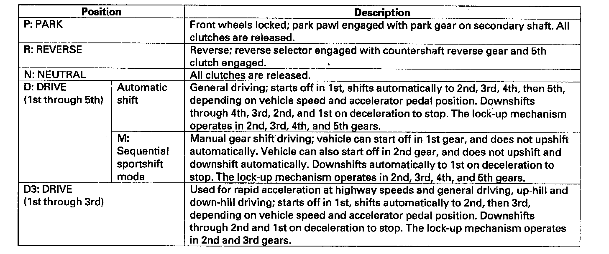

General Operation
General OperationThe automatic transmission is a combination of a three-element torque converter and a four-shaft electronically controlled unit which provides five forward speeds and reverse. The entire unit is positioned in line with the engine.
Torque Converter, Shafts, Gears, and Clutches
The torque converter consists of a pump, turbine, and stator assembly in a single unit. The converter housing (pump) is connected to the engine crankshaft and turns as the engine turns. Around the outside of the torque converter is a ring gear which meshes with the starter pinion when the engine is being started. The entire torque converter assembly serves as a flywheel, transmitting power to the transmission mainshaft. The transmission has four parallel shafts: the mainshaft, the countershaft, the secondary shaft, and the intermediary shaft. The mainshaft is in line with the engine crankshaft. The mainshaft includes the 4th and 5th clutches, and gears for 3rd, 4th, 5th, and reverse (reverse gear is integral with the 5th gear). The countershaft includes gears for the final drive, 2nd, idler, 1st, 4th, 5th, and reverse (the final drive gear is integral with the countershaft). The secondary shaft includes the 1st, 1st-hold, and 2nd clutches, and gears for park, 2nd, idler, and 1st. The intermediary shaft includes the 3rd clutch, and gears for 3rd and 4th. The countershaft 5th gear and the countershaft reverse gear can be locked to the countershaft at its left end, providing 5th gear or reverse, depending with which way the selector is moved. The gears on the mainshaft, secondary shaft, and intermediary shaft are in constant mesh with those on the countershaft. When certain conditions of gears in the transmission are engaged by the clutches, power is transmitted through the mainshaft, and/or to the secondary shaft, intermediary shaft, then to the countershaft to provide drive.
Electronic Control
The electronic control system consists of the powertrain control module (PCM), sensors, and seven solenoid valves. Shifting and lock-up are electronically controlled for comfortable driving under all conditions. The PCM is located in the engine compartment.
Hydraulic Control
The valve bodies include the main valve body, the regulator valve body, the secondary valve body, and the accumulator body. They are bolted to the torque converter housing. The main valve body contains the manual valve, the modulator valve, the torque converter check valve, shift valves A, B, E, CPC valve A, the relief valve, the servo control valve, the lock-up shift valve, the lock-up timing valve, the lubrication control valve, the lubrication check valve, and the ATF pump gears. The secondary valve body contains shift valves C, D, CPC valves B and C, the reverse CPC valve, and the reverse control valve. The regulator valve body contains the regulator valve, the cooler check valve, the lock-up control valve, and the 3rd accumulator. The accumulator body contains the 1st, 1st-hold, 2nd, 4th, and 5th accumulators, shift solenoid valves A, B, C, and D. Fluid from the regulator valve passes through the manual valve to the various control valves. All the clutch receive fluid from the internal hydraulic circuit.
Shift Control Mechanism
To shift gears, the PCM controls shift solenoid valves A, B, C and D, and automatic transmission (A/T) clutch pressure control solenoid valves A, B, and C, while receiving input signals from various sensors and switches located throughout the vehicle. The shift solenoid valves shift the positions of the shift valves to switch the port to send hydraulic pressure to the clutches. The A/T clutch pressure control solenoid valves A, B, and C control the CPC valves A and B, and reverse CPC valve to shift smoothly between lower and higher gear. This pressurizes a line to one of the clutches, engaging the clutch and its corresponding gear.
Lock-up Mechanism
The lock-up mechanism operates in 2nd, 3rd, 4th, and 5th gears in the D position, and in 2nd and 3rd gears in the D3 position. The pressurized fluid is drained from the back of the torque converter through a fluid passage, causing the torque converter clutch piston to be held against the torque converter cover. As this takes place, the mainshaft rotates at the same speed as the engine crankshaft. Together with hydraulic control, the PCM optimizes the timing and volume of the lock-up mechanism. When shift solenoid valve D is turned on by the PCM, shift solenoid valve D pressure switches the lock-up shift valve lock-up on and off. A/T clutch pressure control solenoid valve C, the lock-up control valve, and the lock-up timing valve control the amount of the lock-up conditions. Shift solenoid valve D is located on the accumulator body in the transmission, and A/T clutch pressure control solenoid valve C is mounted on the transmission housing.
Gear Selection
The shift lever has five positions; P: PARK, R: REVERSE, N: NEUTRAL, D: DRIVE 1st through 5th gear range with automatic shift and sequential sportshift in M (sequential sportshift mode) position, and D3: DRIVE 1st through 3rd gear range with automatic shift.

Starting is possible only in the P and N positions because of a slide-type neutral-safety switch.
Automatic Transmission (A/T) Gear Position Indicator
The A/T gear position indicator in the gauge control module (located between speedometer and tachometer) shows which shift lever position has been selected without having look down at the console.
Shift Indicator and M indicator
When the shift lever is shifted into the M (sequential sportshift mode) position, the M indicator next to the D indicator comes on, and the shift indicator at the bottom of the tachometer displays the gear selected.
Transfer Assembly
The transfer assembly consists of the transfer drive gear on the differential, the transfer output shaft in the transmission, the transfer drive gear (hypoid gear), the transfer shaft, the transfer output shaft (hypoid gear), and the companion flange. The transfer assembly is on the rear side of the transmission, beside the differential. The transfer drive gear on the differential drives the transfer output shaft in the transmission. The transfer output shaft in the transmission is connected to the transfer drive gear (hypoid gear) by splines. Power is transmitted from the transfer drive gear on the differential to the rear differential via the transfer assembly and the propeller shaft.